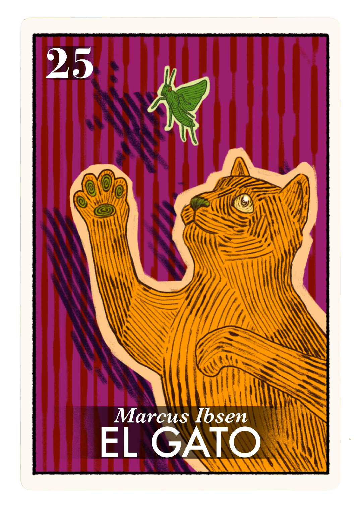
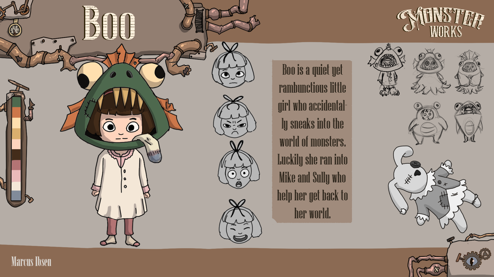
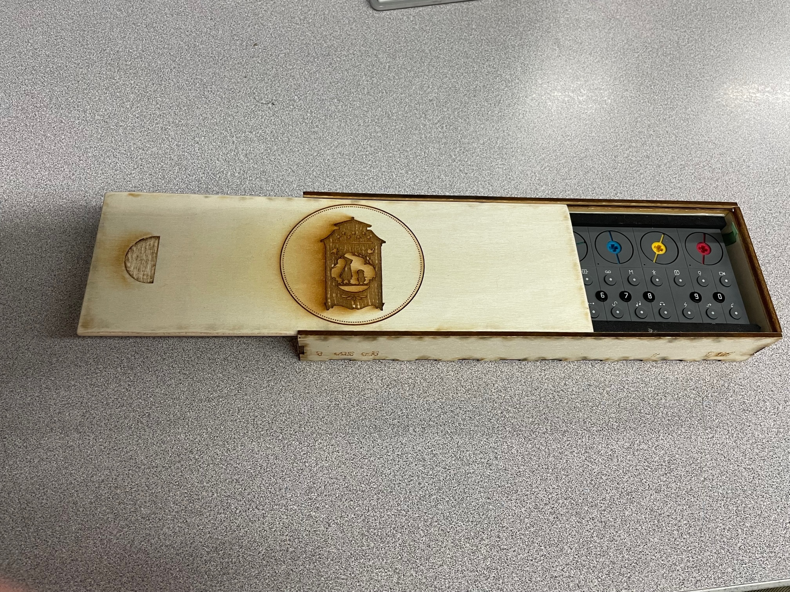
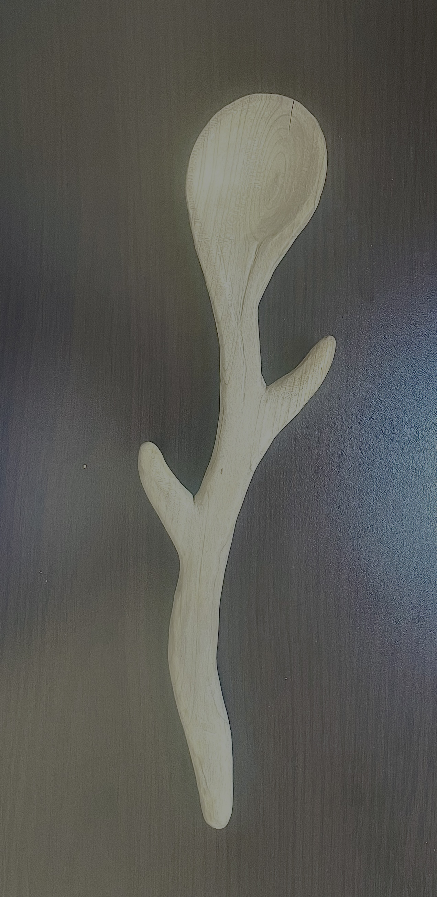
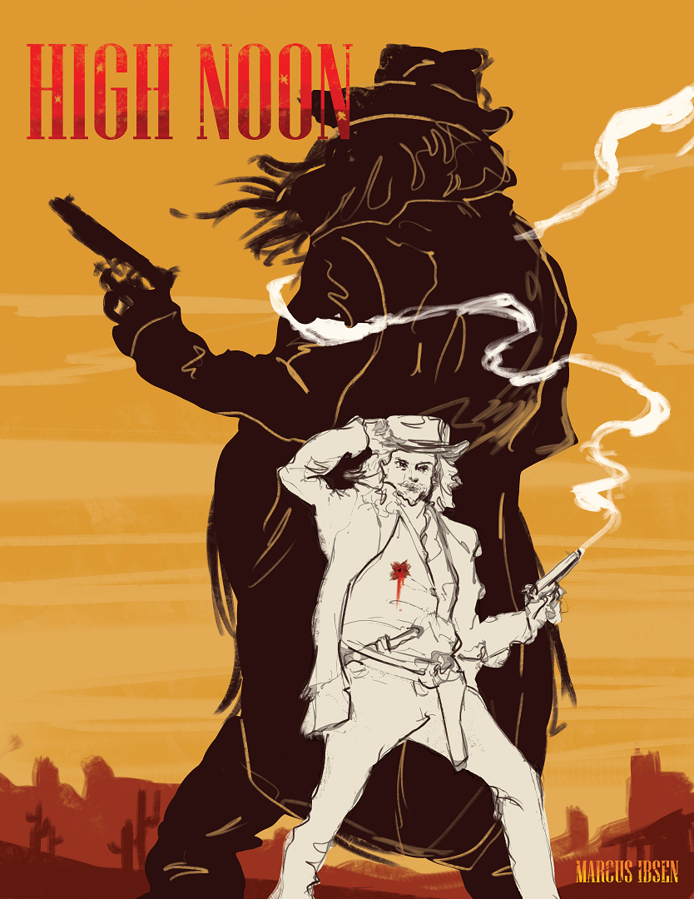
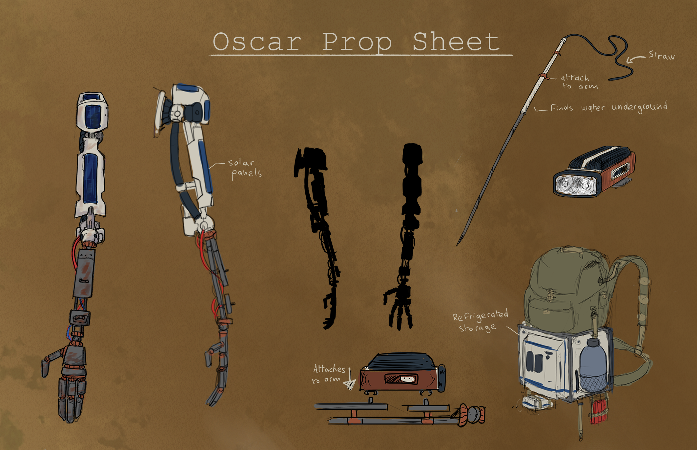
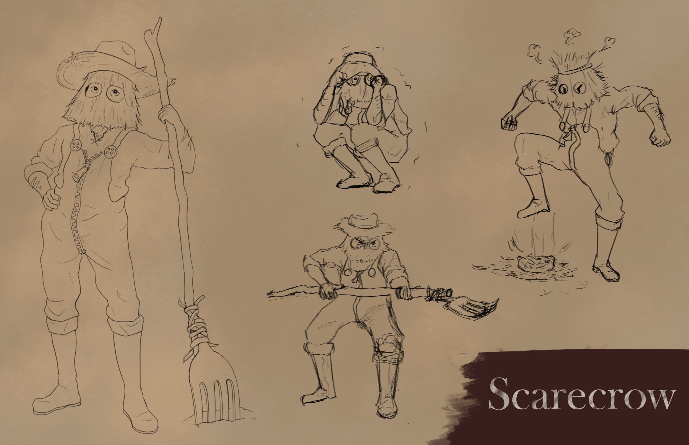

Marcus Ibsen - El Gato
Hi everybody! My name’s Marcus, I’m a pre-production major but I love making all different kinds of art. I’m focused on storyboarding and have been recently getting into woodworking, but I also love animating, 3D, and painting. I'll always like jumping from different mediums and styles and hope to try other kinds of art like glassblowing or ceramics. Most of all I love storytelling and being able to work on my senior film has been super fun and rewarding. That being said, I can’t wait to finish it and go back outside again.






